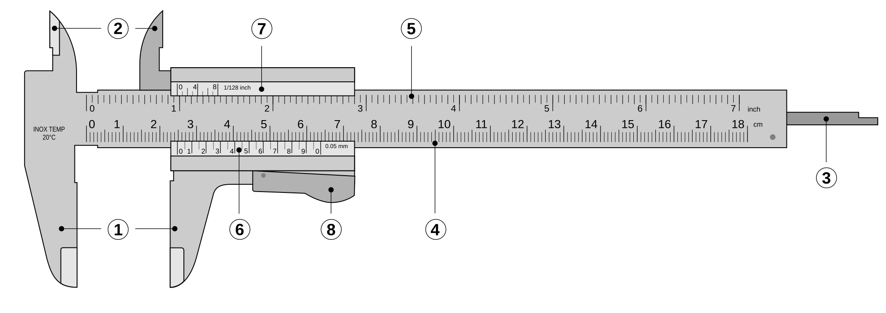
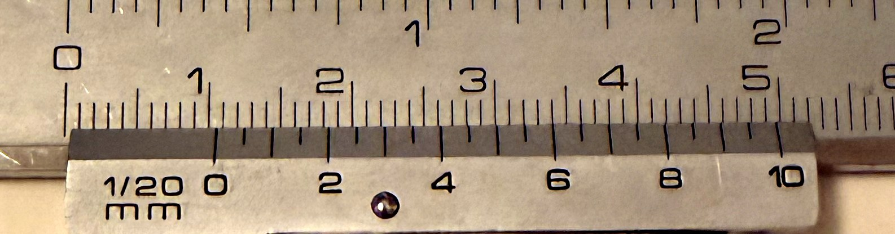

Contenido
Leer el calibre
El calibre da la medida en dos partes: los milímetros enteros los pone la escala fija y la fracción de milímetro la pone el nonio, la escala pequeña que se desliza sobre ella. Aquí está cómo se combinan las dos y una práctica para llegar al control dimensional sabiendo leerlo.
Cómo se usa esta página
No hace falta leerla entera de una vez. Se abre antes de medir por primera vez y se vuelve a ella siempre que una lectura no cuadre.
Las partes que vas a usar

- Mordazas exteriores: espesores, anchuras y diámetros medidos por fuera.
- Mordazas interiores: diámetros y anchuras medidos por dentro.
- Varilla de profundidad: fondo de huecos y altura de escalones.
- Regla fija en centímetros: aporta los milímetros enteros.
- Regla fija en pulgadas: no se usa en esta unidad.
- Nonio en milímetros: aporta la fracción de milímetro.
- Nonio en pulgadas: no se usa en esta unidad.
- Freno: bloquea el cursor para que la medida no se mueva al leerla.
El cursor se desplaza sobre la regla: los milímetros enteros se leen en la escala fija y la fracción, en el nonio. Según el modelo, esa fracción puede mostrarse en un nonio, en un reloj o en una pantalla. El dibujo no sustituye la demostración con el calibre real del taller.
Calibre de nonio, de Joaquim Alves Gaspar (modificado por ed g2s). Wikimedia Commons, CC BY 2.5. Reproducido sin modificaciones.| Parte del calibre | Qué mide | Error que evita la técnica correcta |
|---|---|---|
| Mordazas exteriores | espesor, anchura o diámetro exterior | inclinación y presión excesiva |
| Mordazas interiores | diámetro o anchura interior | medir fuera del diámetro máximo |
| Varilla de profundidad | profundidad de huecos y escalones | apoyo inclinado de la base |

Cómo se lee
1. Los enteros. Mira dónde ha quedado el cero del nonio y busca la última raya de la escala fija que ha dejado atrás. Ese número, en milímetros, son los enteros. Recuerda que los números de la escala fija son centímetros: la raya numerada 1 es 10 mm.
2. La fracción. Recorre el nonio: solo una de sus rayas queda exactamente enfrentada con una raya de la escala fija. Cuenta cuántas divisiones hay desde el cero del nonio hasta ella. Los números del nonio van de cuatro en cuatro divisiones y marcan décimas de milímetro, así que sirven para contar sin perderse.
3. Se suman. El número de divisiones se multiplica por la apreciación, y el resultado se le añade a los enteros.
lectura = enteros + divisiones del nonio × apreciaciónQué significa 1/20 mm
Es otra manera de escribir 0,05 mm: el milímetro dividido en veinte partes. Por eso las lecturas de este calibre terminan siempre en 0 o en 5 centésimas —13,40 o 13,45, nunca 13,43—. Si alguna vez usas uno de 1/50 mm (0,02 mm) el procedimiento es el mismo y solo cambia el número por el que multiplicas. Y si el calibre da la medida en una pantalla no hay nonio que leer, pero el resto de esta página —las partes, la técnica y la comprobación del cero— sigue valiendo igual.
Comprueba que lo has entendido
1. El cero del nonio ha dejado atrás la raya de 24 mm y la raya enfrentada es la división 7. ¿Cuánto mide la pieza?
Comprobar
24 + 7 × 0,05 = 24 + 0,35 = 24,35 mm.
2. Alguien anota 18,63 mm medidos con este calibre. ¿Puede ser?
Comprobar
No. Con 1/20 mm la fracción solo puede ser 0,00 · 0,05 · 0,10… y 0,63 no está entre esos valores: o el instrumento era otro, o la lectura está mal. Un instrumento no da más cifras de las que tiene, y escribir decimales de más no hace la medida más exacta.
Practica con el simulador
Diez lecturas seguidas
El simulador de calibre de mechsimulator.com coloca el instrumento en posiciones al azar y corrige tu lectura. Configurado como se dice abajo, su nonio funciona igual que el del taller.
Configúralo así: en PRECISION (LC) elige 0.05 mm; deja SI —no Imperial— y ZERO ERROR en Off; y en MODE entra en Practice.
Está en inglés. Sus abreviaturas son las mismas cosas de siempre:
- MSR: los milímetros enteros de la escala fija.
- VSR: las divisiones del nonio hasta la raya enfrentada.
- LC: la apreciación.
- TR: la lectura. Su fórmula, TR = MSR + (VSR × LC), es la de arriba.
Ojo con los números del nonio: el simulador lo numera por divisiones (0, 5, 10, 15, 20) y tu calibre lo numera en décimas (0, 2, 4, 6, 8, 10). Es el mismo nonio contado de dos maneras. Cuenta divisiones y multiplica por 0,05, y te da igual cuál tengas delante.
Cada lectura: pulsa Play y en seguida Pause, para que el calibre se quede quieto en una posición cualquiera. Escribe tu lectura en YOUR ANSWER con punto decimal (45.15, no 45,15) y pulsa Check: te dice si has acertado y desarrolla el cálculo. Si no has pulsado Play antes, el botón Check no se activa.
Los botones Coincidence y Zoom resaltan y amplían la raya que coincide. Úsalos al principio para ver cómo funciona y ciérralos cuando practiques en serio: si no, te dan la respuesta hecha.
La meta son diez lecturas seguidas correctas. No hay que entregar nada: es preparación para medir tu pieza.
Antes de medir
Antes de medir: limpia las caras, cierra suavemente el calibre para comprobar el cero, usa las mordazas adecuadas y alinea el instrumento. Registra unidad y resolución. Dos repeticiones son una comprobación básica, no un estudio estadístico; si difieren demasiado, se revisan la técnica, la superficie y el instrumento.